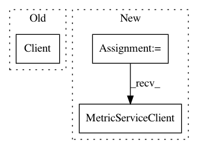

a366fb0d2fb91f7297949c718c749a4587ad78a6,monitoring/api/v3/cloud-client/snippets.py,,get_metric_descriptor,#Any#,129
Before Change
def get_metric_descriptor(metric_type_name):
// [START monitoring_get_descriptor]
client = monitoring.Client()
print(client.fetch_metric_descriptor(metric_type_name))
// [END monitoring_get_descriptor]
After Change
def get_metric_descriptor(metric_name):
// [START monitoring_get_descriptor]
client = monitoring_v3.MetricServiceClient()
descriptor = client.get_metric_descriptor(metric_name)
pprint.pprint(descriptor)
// [END monitoring_get_descriptor]
In pattern: SUPERPATTERN
Frequency: 3
Non-data size: 3
Instances
Project Name: GoogleCloudPlatform/python-docs-samples
Commit Name: a366fb0d2fb91f7297949c718c749a4587ad78a6
Time: 2018-05-18
Author: rennie@google.com
File Name: monitoring/api/v3/cloud-client/snippets.py
Class Name:
Method Name: get_metric_descriptor
Project Name: GoogleCloudPlatform/python-docs-samples
Commit Name: f820f6dae6e4b4f1ac0b1dcc12fd0f278be703a2
Time: 2018-09-04
Author: billyjacobson@users.noreply.github.com
File Name: bigtable/metricscaler/metricscaler.py
Class Name:
Method Name: get_cpu_load
Project Name: GoogleCloudPlatform/python-docs-samples
Commit Name: a366fb0d2fb91f7297949c718c749a4587ad78a6
Time: 2018-05-18
Author: rennie@google.com
File Name: monitoring/api/v3/cloud-client/quickstart.py
Class Name:
Method Name: run_quickstart